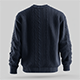

Merino Wool Cable Knit Sweater
$199.99
This luxurious cable knit sweater is made from 100% merino wool for exceptional warmth and softness. The classic cable pattern adds timeless texture and visual interest to this versatile piece. Natural temperature regulation properties make it perfect for transitional seasons.
Product Details
This luxurious cable knit sweater is made from 100% merino wool for exceptional warmth and softness. The classic cable pattern adds timeless texture and visual interest to this versatile piece. Natural temperature regulation properties make it perfect for transitional seasons.
Key Features:
Customer Reviews
Absolutely stunning sweater! The merino wool is incredibly soft and the cable knit detail is beautiful. Worth the investment.
Bought this for our lead software engineer and she loves it. High quality construction and the wool feels luxurious. Fits true to size.
Beautiful sweater but requires dry cleaning which is inconvenient. The quality is excellent though and it's very warm.